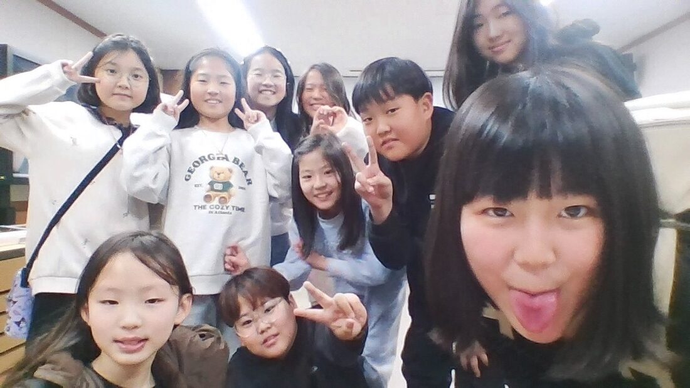
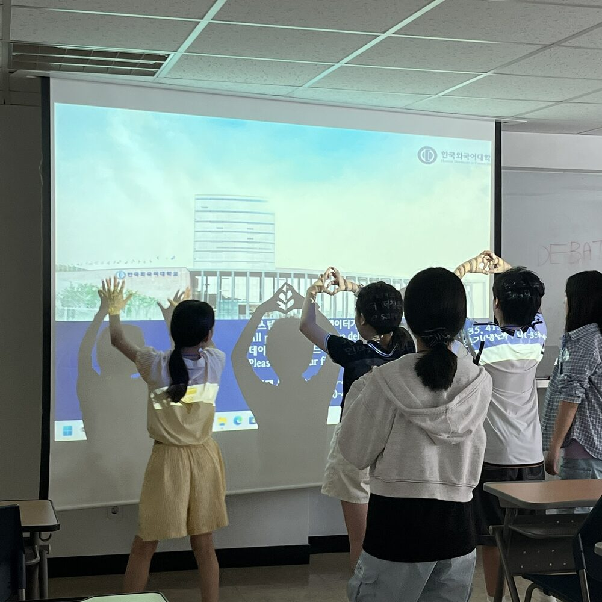
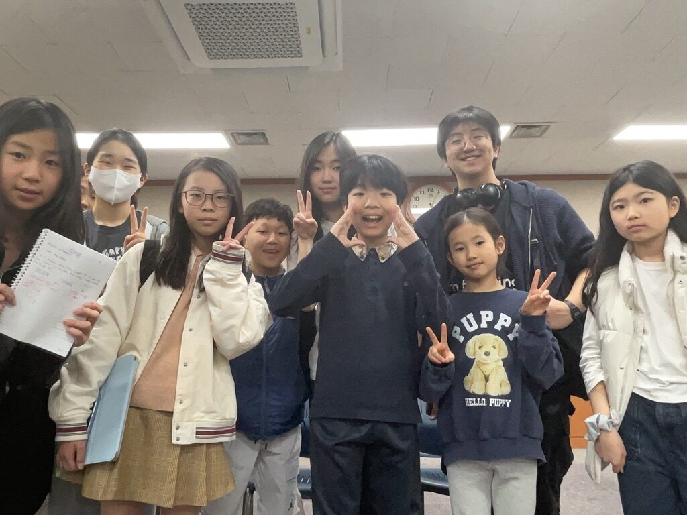
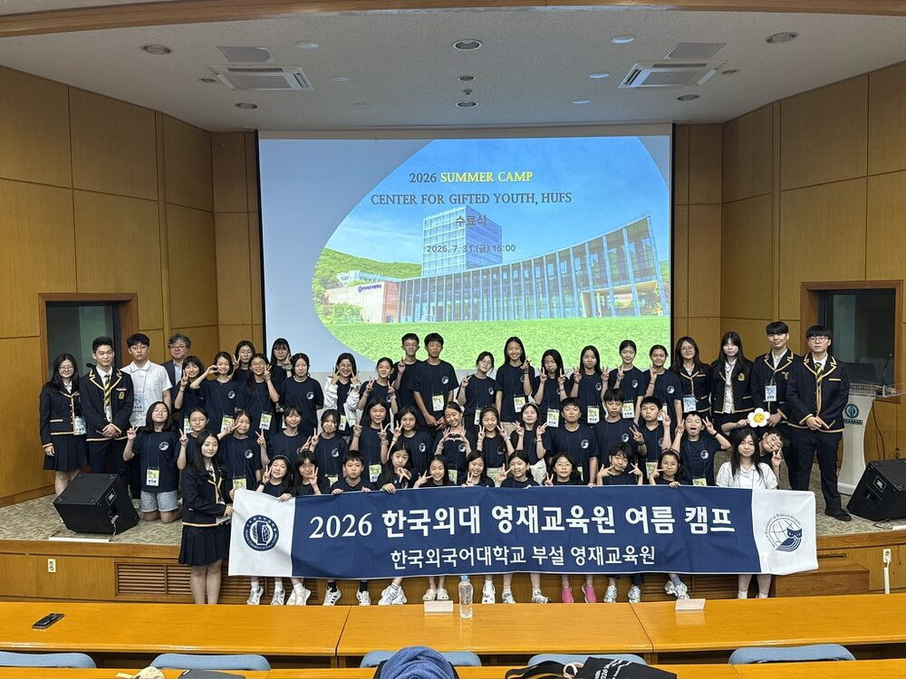
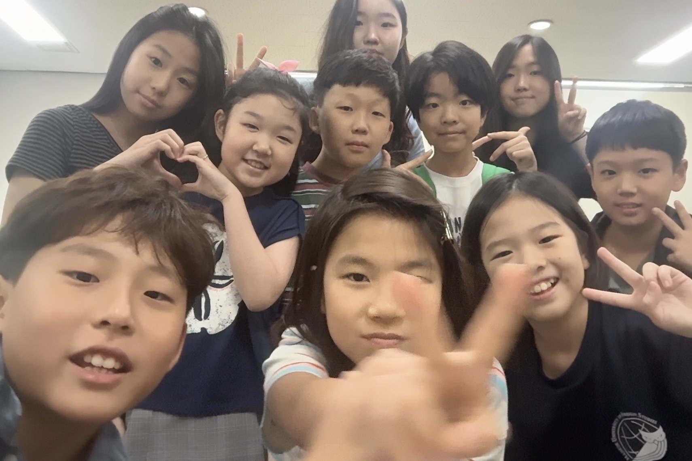
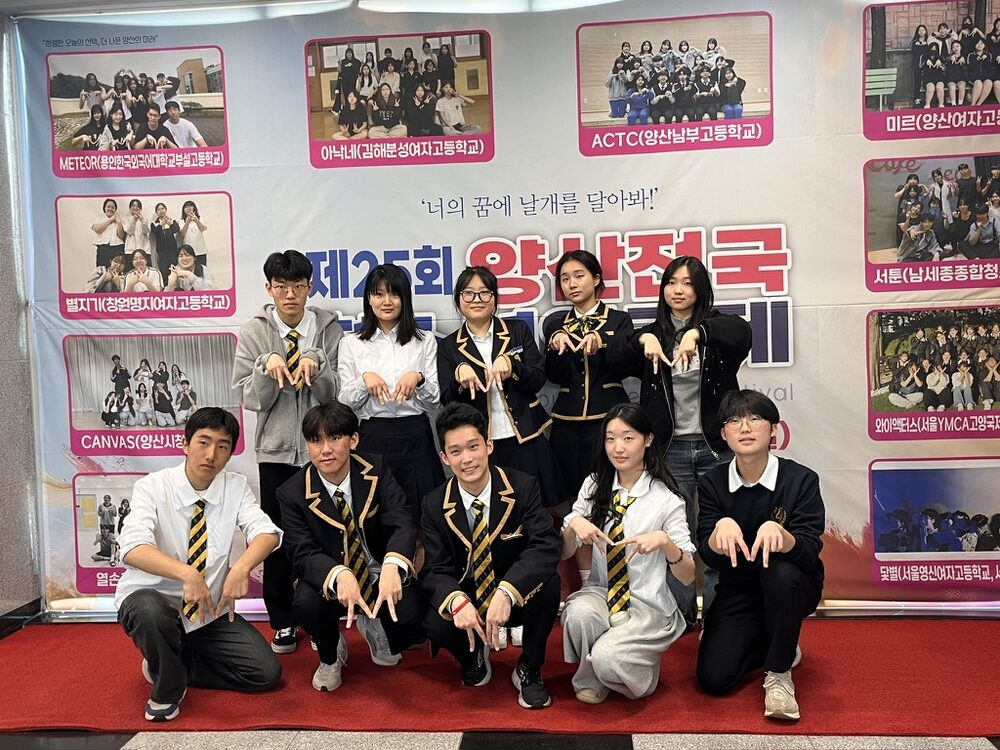
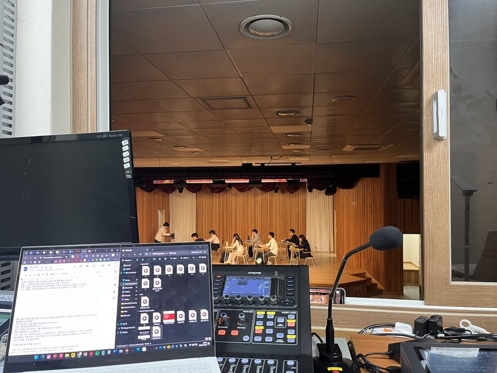
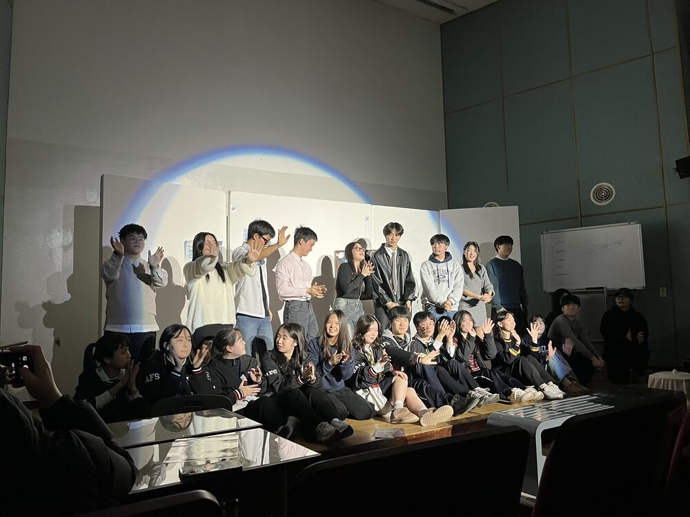
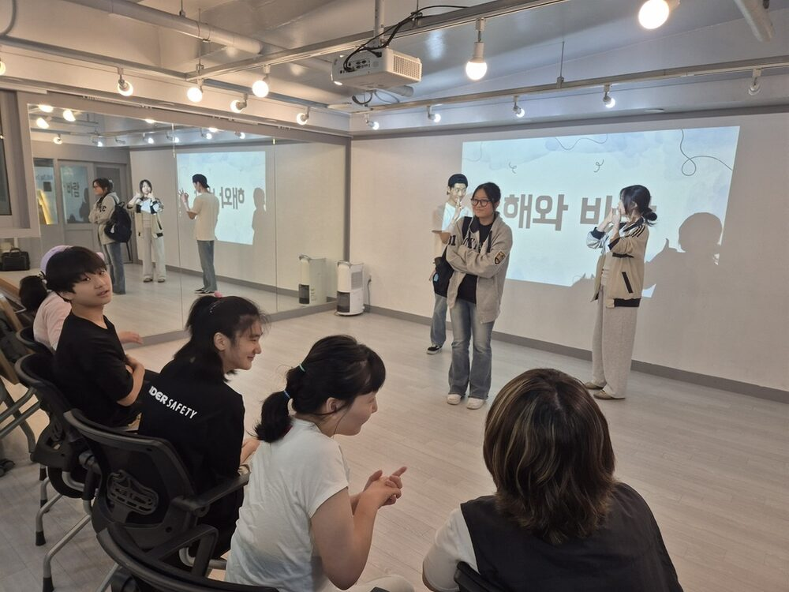

Teaching Assistant, Gangnam Lifelong Education Center for Individuals with Developmental Disabilities
- Assisted with lifelong education classes for adults with developmental disabilities.
- Provided one-on-one academic, communication, and activity support tailored to individual cognitive, behavioral, and communication needs.
- Was the only high school volunteer the center has ever had.
Mentor, Gifted Class of Hankuk University of Foreign Studies
- Educated beginner French to talented elementary and middle school students.
- Educated beginner philosophy to talented elementary and middle school students, using thought experiments such as the Trolley Problem, Beetle in the Box, the Language Problem, the Chinese Room, and the Violinist, and led speaking and writing exercises about philosophy.
- Taught 100+ students across two summer camps: Advanced WSDC Debate Mentor (GiftedXHAFS Summer Camp, 2025) and International Relations Mentor (2026).
- Supervised students as a residential group leader during 15-hour daily camp schedules.





Theater
- Playwright, OUTBURST (English Theater Club): adapted The Devil Wears Prada and 10 Things I Hate About You; performed in front of 200+ people in biannual summer and winter productions.
- Writer, Sound Engineer & Assistant Director, METEOR (Youth Theater Organization): wrote for the 25th Yangsan National Youth Theater Festival, winning the Excellence Award and Best Screenplay Award; performed in front of 150+ people; examined the hyper-competitive nature of the Korean education system and its effects on students.
- Actress, Kineme (Youth Pantomime Organization): wrote and performed nonverbal adaptations of Korean folktales, hosting charity pantomime performances for deaf children at the Cheoin Welfare Center for the Disabled.




Student Curriculum Advisor, Ithaca City School District
- Advised the school curriculum for 8th grade students.
- Provided input on the music curriculum, particularly its connections to civil rights.
Volunteer Mentor, Ithaca Sciencenter
- Led science activities for local K–5 children.
- Organized programs for underprivileged and disabled children to make science accessible and fun.
Volunteer, Tompkins County Public Library & Dawoom English Library
- Organized shelves and led group activities.
- Read to local underprivileged children.
Mentor, Korean Cornell Church Korean Teaching Program
- Taught Korean to local Korean-American children.